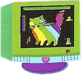
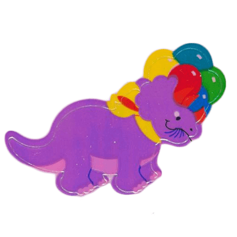
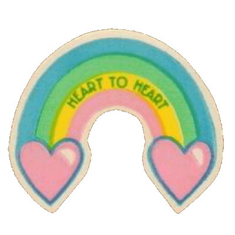

stickers, my beloved!
inspired by
lulu in cyberspace



if i'm not careful, this will easily become the most overwhelming and largest of my pages. i never grew out of my sticker phase and i didn't realize how many people have made scans of some of my fav childhood stickers. ;u;